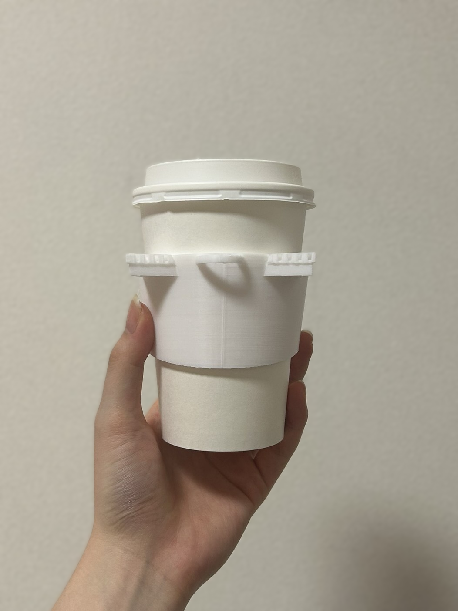

10月4日
キックオフミーティングwith湘南貿易 湘南貿易の取り組みの説明を聞き、大学のゴミ集積場の見学をした。
＜金型体験の様子＞


MEMO
・樹脂量は最大150立方センチメートルの2/3くらい
・流し入れる部分の樹脂も考える
・コップで半分くらいの量を使っている
・大きいものを作る場合は厚みが5㎜くらいになる
・流し入れる部分の樹脂も考える
・コップで半分くらいの量を使っている
・大きいものを作る場合は厚みが5㎜くらいになる
MEMO
・大学の各フロアで回収したごみを手作業で再度分別している
・一番分別ができていないのは生協のお弁当パック
・食べ残しがそのまま入っていることもある
・レジ袋などにまとめられているゴミは開けて分別作業を行う必要がある
・寒い時期はホットドリンクのゴミが増える
→カップ（紙）と蓋（プラ）の分別ができていない人が多い
・神奈川大学は生ごみ処理機を導入していることで燃えるゴミが減っている
・一番分別ができていないのは生協のお弁当パック
・食べ残しがそのまま入っていることもある
・レジ袋などにまとめられているゴミは開けて分別作業を行う必要がある
・寒い時期はホットドリンクのゴミが増える
→カップ（紙）と蓋（プラ）の分別ができていない人が多い
・神奈川大学は生ごみ処理機を導入していることで燃えるゴミが減っている
10月18日
大学内探索 大学の現状を把握するために大学内の様々な場所を探索してみました。
＜気になったところ＞
・6,7階のテラス
・自動販売機
10月25日
アイデア共有 事前に考えてきたアイデアを共有しました。
＜考えてきたアイデア＞
・学生証入れ（名刺入れ）
→一々財布やカードケースを取り出すのが面倒くさい
→カバンにつけられる、スマホスタンドにもできるとか別の要素を追加できそう
→人の目に留まりやすい
・クリップ、小型カッター（一枚の紙が切れる程度の鋭利さ）
→日用品だから多くの人に使ってもらえる
→消耗品をリサイクル素材で作ることで長く使ってもらえるように
・カップホルダー、スリーブ
→倒れないように机に付けられるものとか良さそう
→ゴミの分別が意識できそう
共起ネットワーク 三人の会話を録音して共起ネットワークに起こしました。（ミクモさんが）
（画像調整中）
10月30日 昼休み
25日に共有したアイデア＋新しく出たアイデアの中から作るモノを決定しました。
新しく出たアイデア→ヘアクリップ、花瓶
＜作りたいモノ＞
・カップスリーブ（ゴミの分別を意識）
・花瓶（自然との調和、循環）
・ヘアクリップ（かわいい・欲しいを全面に、デザイン性）
「分別」「循環」「デザイン」それぞれの要素に突き抜けたアイデアを採用しました。
自分の担当：カップスリーブ
次回(11/8)までにある程度デザイン案考えてくる、できたらCADで設計
11月8日
デザイン案

＜悩んだところ＞
・柔軟性がないためサイズ調整ができない（市販の物は、革や紙、木などで作られサイズ調整ができる）
・ありきたりなデザイン、シンプルなスリーブにはしたくない
・リュックに付けられるようにしたい
→動物の耳をつけてかわいく、カチューシャ風にすることでキーホルダーっぽく、多少のサイズ調整ができそう。
カラビナと合体したらリュックに付けられる＋上手くいけば取っ手になるかも
11月15日～コンペ前
Fusion360で設計開始
1作目。
大きすぎた。
2作目。
耳、キーホルダーの穴は3mm、スリーブ本体の厚さは3mm、角度は10度。
改善点 ・耳の高さが低く持ちづらい
・カップとスリーブの角度が合わず隙間ができている
・スリーブ本体の厚さがもう少し薄い方が柔軟性が出て異なるサイズに対応できそう
3作目以降、クマの耳も追加。

指3本が収まるように耳とキーホルダーの穴を最大限上に移動。
猫耳はスリーブ本体の厚さを3㎜のまま、クマの耳は2㎜にしてみた。角度は7度に変更。

（サポート有）
キーホルダーの穴のサイズやスリーブの高さを微調整し続け発表用のプロトタイプが完成。


コンペ当日
発表スライド


スリーブを顔に当てて写真を撮ってみた。
キックオフからコンペまでの様子
神奈川大学HP doyolab
金型体験会 1/10
湘南貿易さんにくま耳スリーブを金型におこしてもらい、ファブラボにて金型体験をさせていただきました。

スリーブが薄いことや金型を温める機械がないことから樹脂が最後まで流れ切らず、何度もチャレンジすること25回以上、、
最終的に上手くいったものは1つだけでした。
実際に金型におこしてペットボトルキャップの素材で作ってみると、プロトタイプとは異なる特徴が多くあり、改善すべき点がいくつか見つかりました。
改善点
・スリーブ本体の厚さ
→プロトタイプの段階では、複数のサイズ展開に対応するためスリーブを薄くし柔軟性を持たせたが、実際にペットボトルキャップ素材で作ってみると、
思ったよりも柔軟性が出て、飲み物の重みによりカップの上まで動いてしまうことがわかった。（量が減れば途中で止まる）
また、樹脂を最後まで流すためにも、もう少し厚みがあった方が良いと考えられる。
・耐熱性
→長時間持っていると飲み物の熱さが移ってしまうことが判明した。
原因としては、スリーブ本体の厚さ以外に角度が考えられる。プロトタイプ制作時は、カップとスリーブの角度が合うように微調整していたが、
スリーブの角度を少し拡げることで熱を伝わりにくくすることができたのではないか。
→プロトタイプの段階では、複数のサイズ展開に対応するためスリーブを薄くし柔軟性を持たせたが、実際にペットボトルキャップ素材で作ってみると、
思ったよりも柔軟性が出て、飲み物の重みによりカップの上まで動いてしまうことがわかった。（量が減れば途中で止まる）
また、樹脂を最後まで流すためにも、もう少し厚みがあった方が良いと考えられる。
・耐熱性
→長時間持っていると飲み物の熱さが移ってしまうことが判明した。
原因としては、スリーブ本体の厚さ以外に角度が考えられる。プロトタイプ制作時は、カップとスリーブの角度が合うように微調整していたが、
スリーブの角度を少し拡げることで熱を伝わりにくくすることができたのではないか。